Explore Sydney
A Brief History
Sydney Harbour was settled by Britain in 1788 as a penal colony that grew into Australia's largest metropolis. Opera House sails, sandstone convict precincts, and harbour bridges record colonial foundations and post-war immigration on the Pacific rim. Bondi-to-Coogee coastal walks and Rocks laneways extend harbour settlement layers along the Pacific escarpment.
Attractions Map
Top Sights & Activities
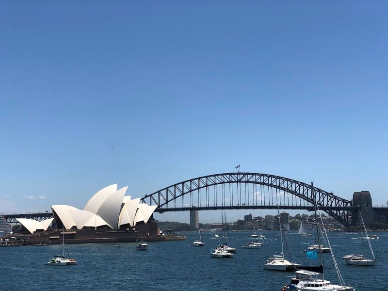
Mrs Macquarie's Chair
Mrs Macquarie's Chair is a historic sandstone bench, skillfully carved by convicts in 1810 for Elizabeth Macquarie, the wife of New South Wales' governor. This charming spot offers views of Sydney Harbour, including the Opera House and Harbour Bridge—making it a must-visit for photography enthusiasts. Located at the edge of The Domain and near the Royal Botanic Gardens, it's an ideal place to unwind while soaking in scenery.
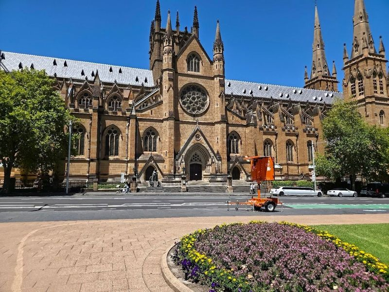
St Mary's Cathedral
Saint Mary's Cathedral, a Gothic-style Catholic cathedral constructed from local sandstone between 1868 and 1928, is a magnificent structure that can accommodate up to 2,000 worshippers. Standing at 75 meters tall, it is the second largest church in Australia. The cathedral's timeless architecture and grandeur make it a popular tourist attraction. Inside, visitors can admire beautiful stained glass windows, an impressive organ, intricate wood carvings, and towering neo-Gothic arches.
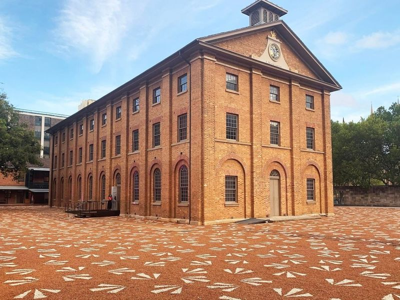
Hyde Park Barracks
Hyde Park Barracks, erected in 1819 in Sydney, Australia, served as a prison for British convicts and later housed female immigrants and destitute elderly women. The barracks transitioned through various roles over the years, including functioning as a courthouse and government offices. Today, it offers visitors a glimpse into the lives of convicts and orphans who lived there in the 1800s through twice-daily tours or audio guides.
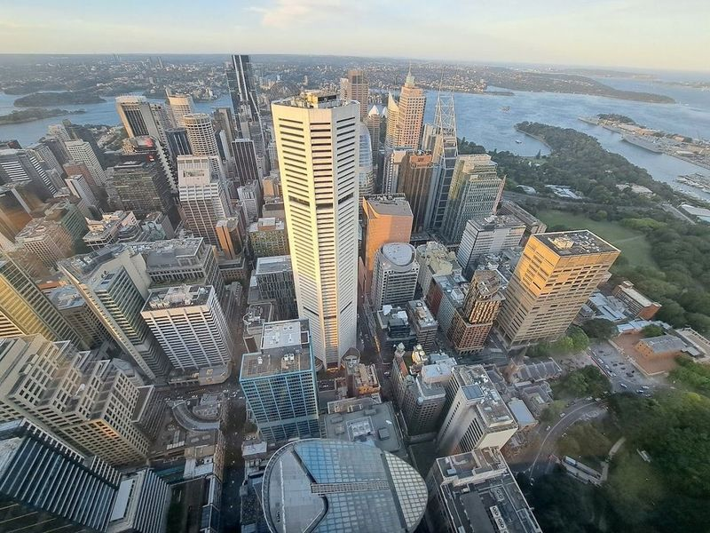
Sydney Tower Eye
Formerly known as Centrepoint Tower, Sydney Tower Eye is a must-visit landmark in Sydney. It offers a 4-D cinema, an observation deck, and an outdoor viewing platform that provides 360-degree views of the city. This tower serves as a great starting point for first-time visitors to get their bearings in Sydney. The panoramic scenery from the top allows visitors to familiarize themselves with the city's layout and plan their transportation options accordingly.
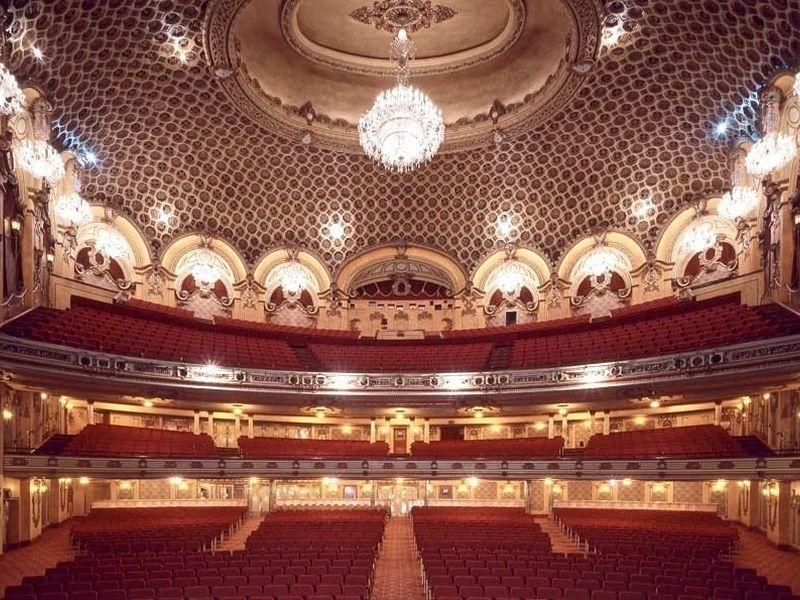
State Theatre
The State Theatre, located in Sydney's CBD, is a establishment that hosts live music, film screenings, and comedy shows. The building boasts ornate Gothic, Italian, and art deco architecture and was originally opened in 1929 as a 'Fantasy Palace for the People.' With its opulent design featuring vaulted ceilings, mosaic floors, marble columns and statues, brass and bronze doors, it offers a unique experience for visitors.
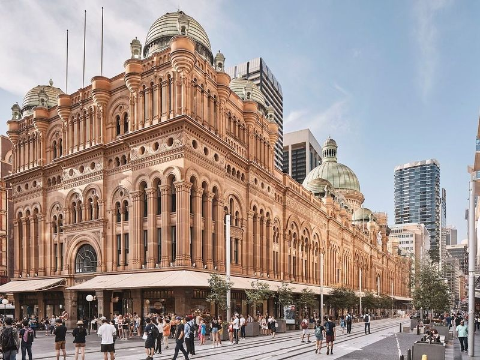
Queen Victoria Building
The Queen Victoria Building, a historic shopping center in Sydney's CBD, is a example of Romanesque architecture designed by George McRae. Built in the late 19th century, it now houses over 175 modern stores including renowned brands like Tiffany and Ralph Lauren alongside charming tea rooms, florists, and jewelry stores. The building's grand arches, pillars, and stained-glass windows reflect the artistry of its craftsmen from a bygone era.
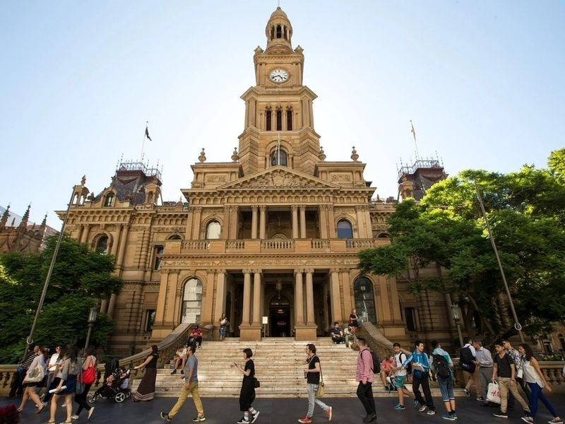
Sydney Town Hall
Sydney Town Hall is a grand 19th-century building located on George Street in the heart of Sydney. Constructed from local sandstone in the Victorian Second Empire style, it is home to the Lord Mayor's chambers, council offices, and venues for various functions and meetings. The building features ornate interiors with stained-glass windows and an impressive crystal chandelier in its vestibule.
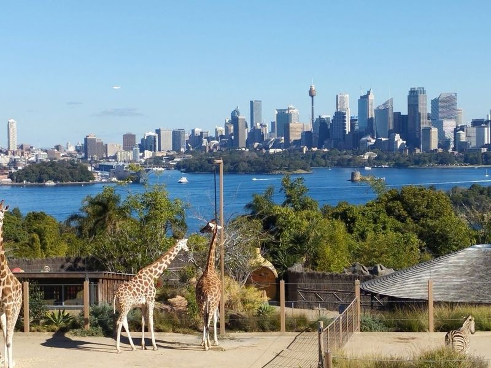
Taronga Zoo Sydney
Nestled along the picturesque Sydney Harbour, Taronga Zoo is a must-visit destination for animal lovers and adventure seekers alike. Home to over 350 distinct species, this zoo offers an immersive experience that connects visitors with wildlife in a natural setting. Accessible via a scenic ferry ride from the city center, it provides views of landmarks like the Sydney Opera House and Harbour Bridge.
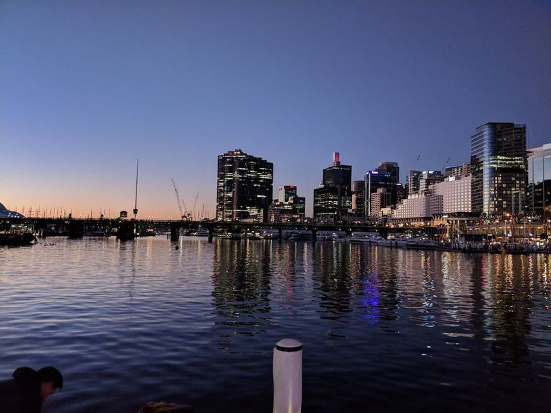
Darling Harbour
Darling Harbour is a waterfront destination in Sydney, offering a plethora of attractions and hosting large-scale events. Spanning 20 hectares, it serves as the gateway to various tourist hotspots including SEA LIFE Sydney Aquarium, IMAX theatre, Australian National Maritime Museum, WILD LIFE Sydney Zoo, and the Chinese Garden of Friendship.
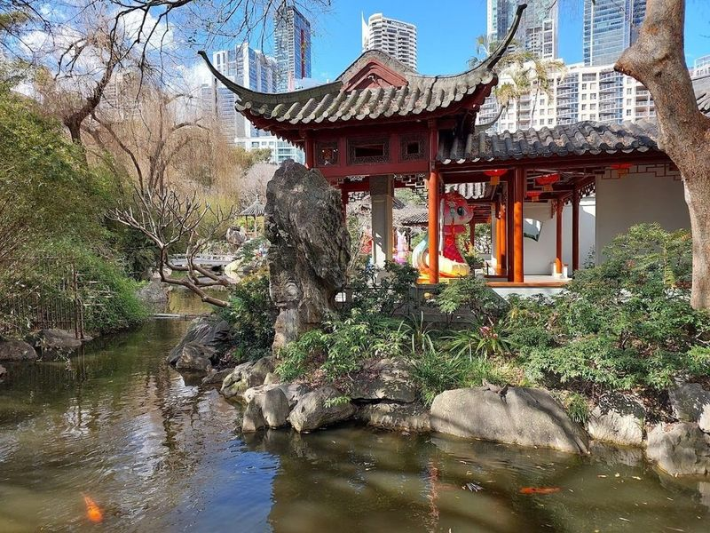
Chinese Garden of Friendship
The Chinese Garden of Friendship is a serene walled garden in Sydney, located near Darling Harbour. It was gifted to Australia by the city of Guangzhou as a symbol of friendship between the two countries. The garden features pavilions, ponds, waterfalls, and exotic plants inspired by classical Guangzhou gardens. Despite its smaller size compared to other green spaces in the city, it offers a unique charm and tranquil atmosphere for visitors to enjoy.
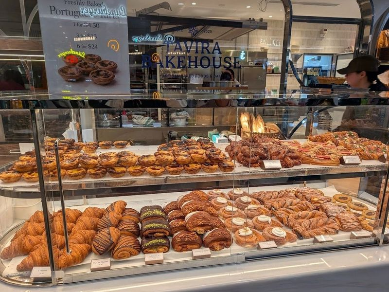
Sydney Fish Market
Sydney Fish Market is a beloved institution among locals and a seafood destination. It's the second-largest seafood market globally in terms of variety, offering some of the freshest seafood in Sydney. The market features shops for seafood, deli items, wine, and baked goods, as well as casual cafes and restaurants serving fresh oysters and fish and chips.
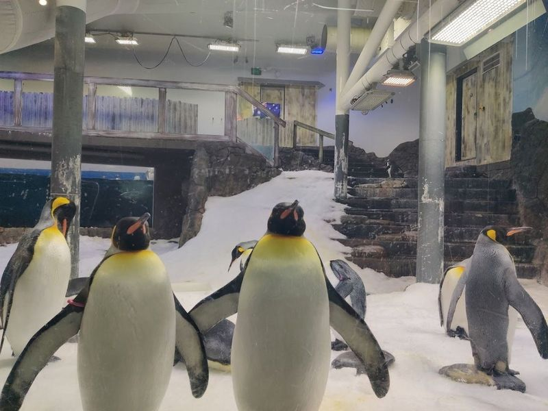
SEA LIFE Sydney Aquarium
SEA LIFE Sydney Aquarium is a must-visit aquatic attraction in Sydney, offering five distinct habitat exhibitions showcasing Australia's marine life. Conveniently located near Circular Quay, it provides easy access for visitors. The aquarium houses a diverse range of ocean creatures and offers educational sessions on animal feeding and more. It's an ideal family-friendly activity that allows you to explore the rich underwater world of Australia's aquatic animals.
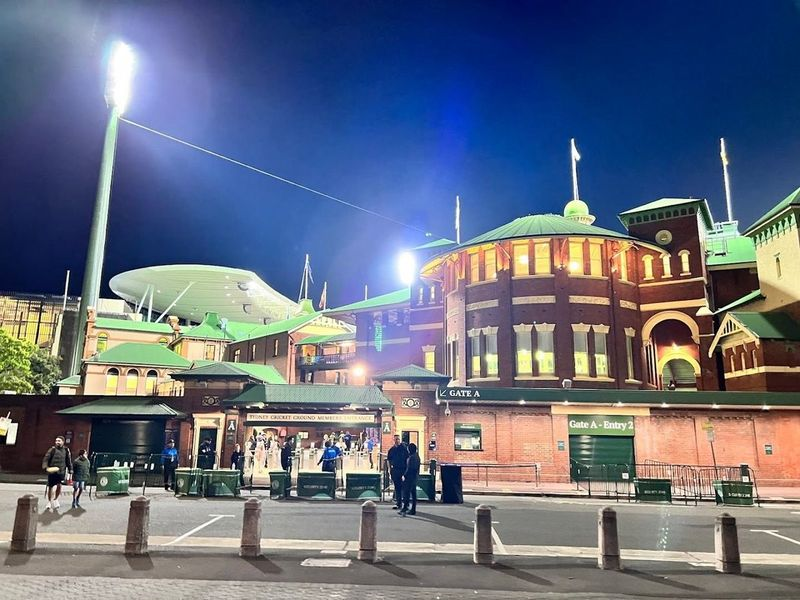
Sydney Cricket Ground
The Sydney Cricket Ground (SCG) in Moore Park is a historic sports stadium that has been hosting cricket, rugby, soccer, and even Olympic events since 1876. It's a popular venue for both domestic and international matches, as well as concerts featuring renowned artists like Madonna and U2. Visitors can take a behind-the-scenes tour of the SCG to explore the fields of play, dressing rooms, media room, and Walk of Honour while learning about the venue's rich history.
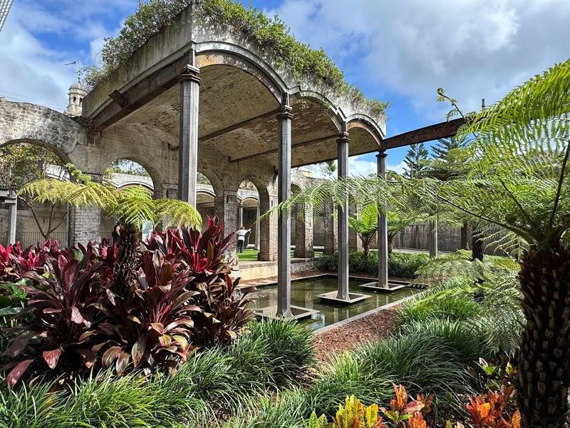
Paddington Reservoir Gardens
In Paddington, Sydney, the Paddington Reservoir Gardens is a urban sunken garden that has been transformed from a derelict water reservoir into an award-winning public park. The site seamlessly blends salvaged masonry with modern steel boardwalks, creating a unique and picturesque setting reminiscent of ancient architectural wonders.
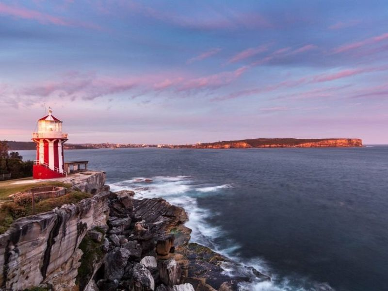
Hornby Lighthouse
Hornby Lighthouse, a striking red and white striped structure, has been guiding ships since its construction in 1858. Situated at Sydney's South Head, it offers views of the ocean and serves as a reminder of the city's serene side. Visitors can enjoy scenic walking tracks and lookouts that provide panoramic vistas of Sydney Harbour. The lighthouse is part of the Sydney Harbour National Park and is accessible via a picturesque 2.8 km walk from Watsons Bay.
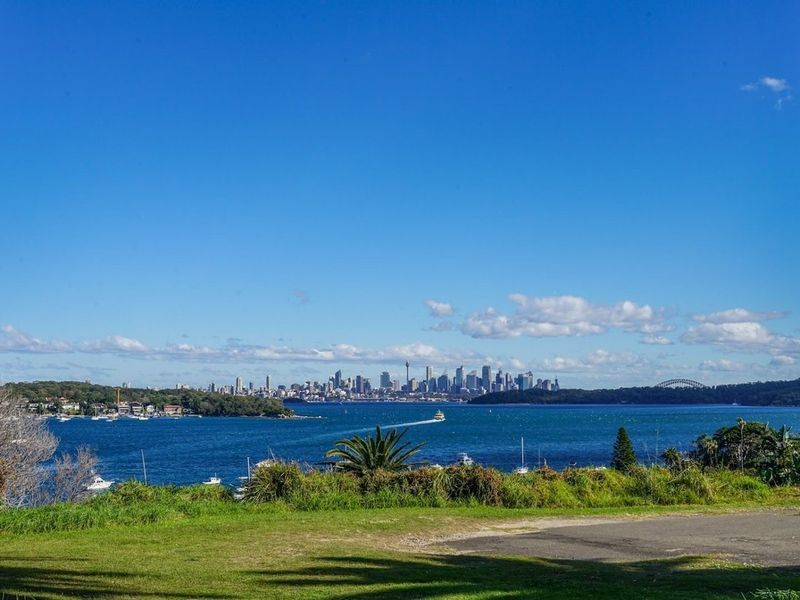
North Head
North Head, located about 3km south of central Manly, is a picturesque coastal national park with cliffs that offer panoramic views of Sydney Harbour. The area features secluded beaches, scenic walking paths through native scrubland, and former military sites such as barracks and WWII gun emplacements. Visitors can explore the headland on foot or by bike, taking in the natural beauty and historical landmarks along the way.
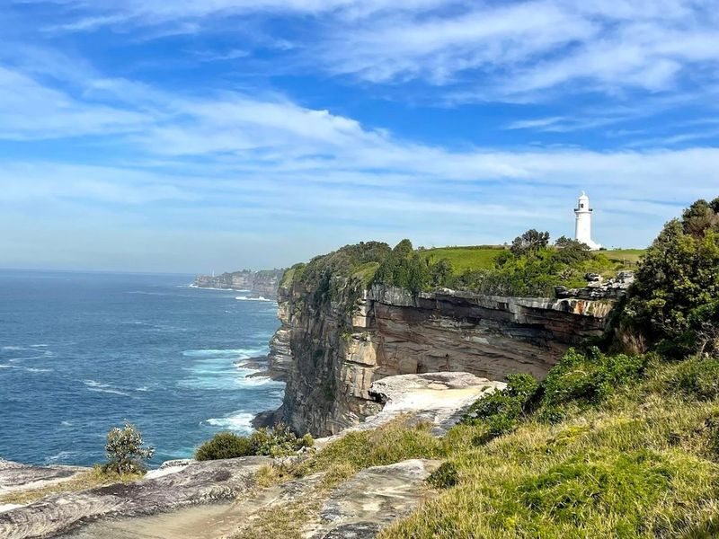
Macquarie Lighthouse
The Macquarie Lighthouse is the first lighthouse that was constructed in Australia. It provides guided tours and a panoramic view of Sydney Harbour, which is also noticeable from the coastal cliff walking trail nearby. The builder of this historical landmark remains unknown, but it sits at the end of a scenic walkway with lots of roadside parking available.
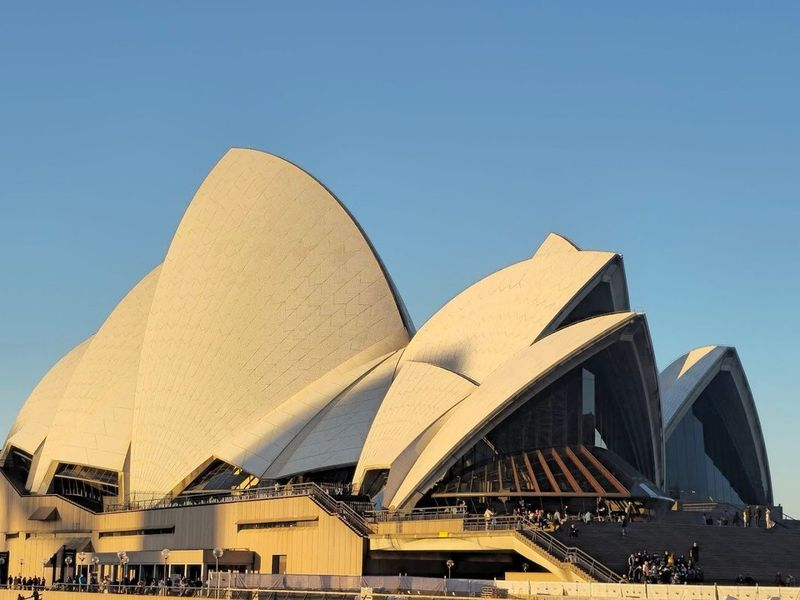
Sydney Opera House
The Sydney Opera House is an arts center located on Bennelong Point in Sydney Harbour, offering views of the harbor, bridge, and city skyline. With over 1,600 performances annually, it hosts a diverse range of events including opera, theatre, music, dance, and comedy shows. This architectural marvel is a attraction that draws millions of visitors each year. Its unique design and cultural significance make it a standout feature of the picturesque Sydney Harbour.
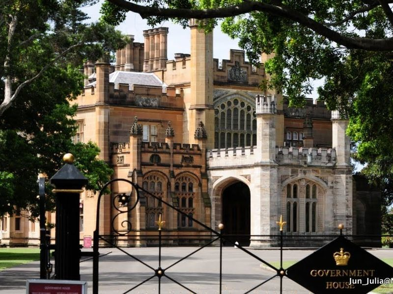
Government House
Government House, the official residence of the New South Wales governor, is a grand mansion dating back to the 1800s. Designed by Edward Blore in a Gothic Revival style, it boasts crenellated battlements and detailed interiors reminiscent of a castle. The State Rooms are marvelously restored and showcase Victorian pomp.
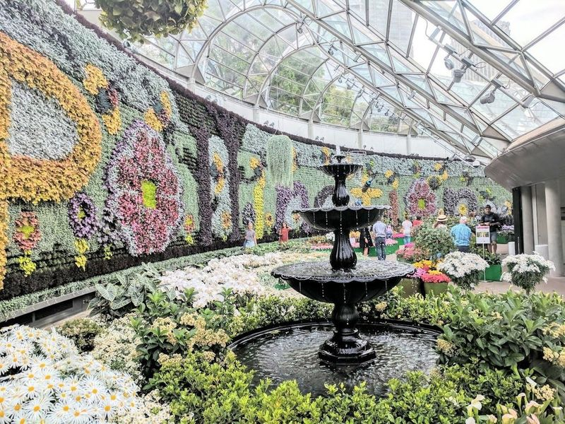
Royal Botanic Garden Sydney
The Royal Botanic Garden Sydney, established in 1816, is the oldest scientific institution in Australia. Spanning 30 hectares, it offers a tranquil escape within the bustling city. With over 8000 species of plants from around the world, including ancient rainforest trees and delicate desert flowers, this garden provides a serene environment for nature enthusiasts.
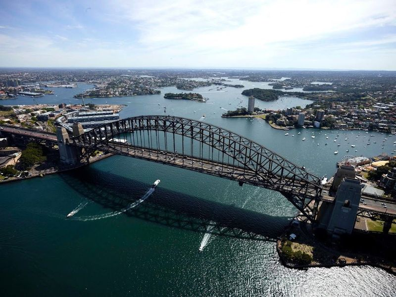
Sydney Harbour Bridge
Sydney Harbour Bridge, an structure opened in 1932, offers the thrilling BridgeClimb experience and the Pylon Lookout with exhibitions. Beyond its fame, Sydney's surroundings offer unique experiences like camping beneath the bridge or glamping in a zoo with a harbor view. The city's wild heart extends to camping areas and caravan parks near the CBD, while train rides from Central Station lead to the Blue Mountains or coastal beaches.
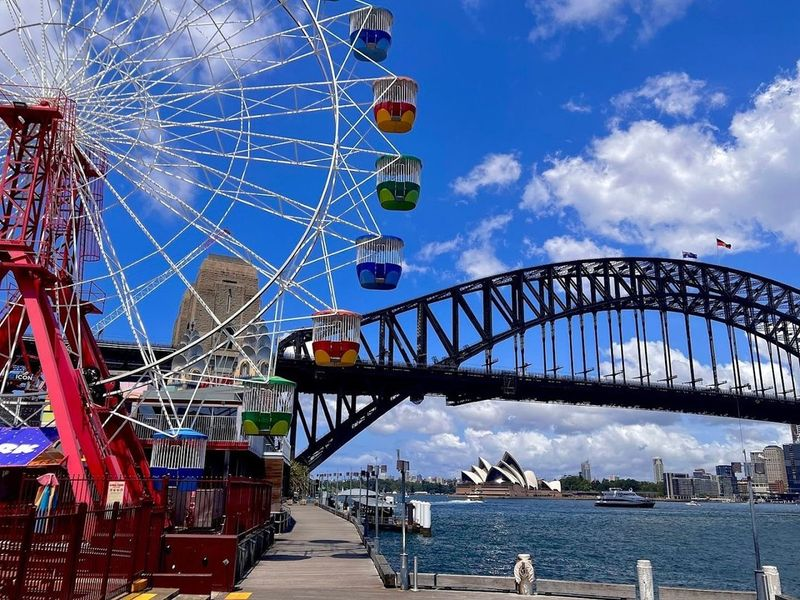
Luna Park Sydney
Luna Park Sydney, a beloved amusement park located at Milsons Point, has been enchanting visitors since its grand opening in 1935. After undergoing redevelopment and reopening in 2004, this destination features a charming blend of vintage rides like the Wild Mouse Rollercoaster and the Big Dipper, alongside classic attractions such as the Carousel.
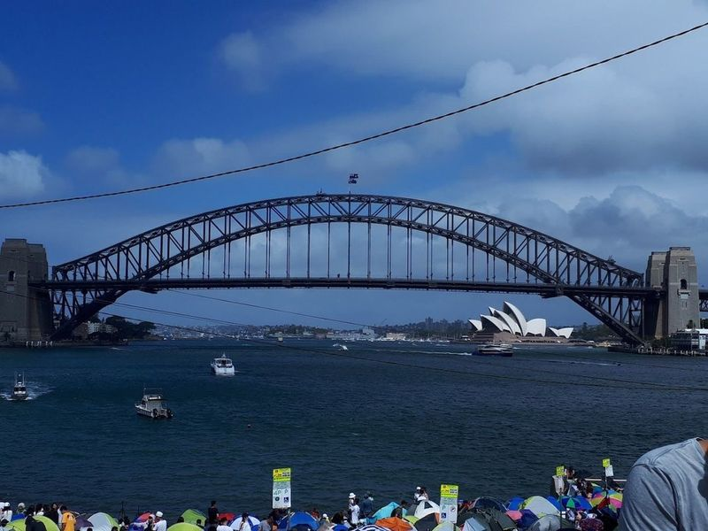
Blues Point Reserve
Blues Point Reserve is a picturesque bayfront park in Sydney, offering views of the Sydney Harbour, including the Opera House and the Harbour Bridge. The reserve features a nautical-themed playground, fig trees, and picnic tables, making it an ideal spot for a leisurely day out. It's also a popular location for fishing enthusiasts looking to catch trevally, kingfish, or jewfish while enjoying the scenery.
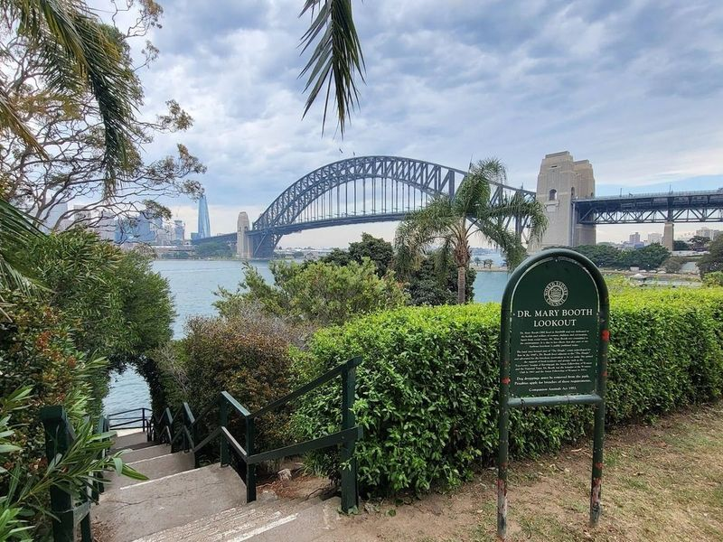
Mary Booth Lookout Reserve
Located in Kirribilli, just 5km or a 22-minute drive from Sydney CBD, Mary Booth Lookout Reserve offers a secluded and view of the Harbour Bridge without the usual crowds. Accessible from Milsons Point train station, visitors can enjoy a perfect picnic spot on the grassy reserve above. The lookout provides an awe-inspiring vista of landmarks such as the Opera House and Harbour Bridge, along with serene suburbs and bustling river traffic.
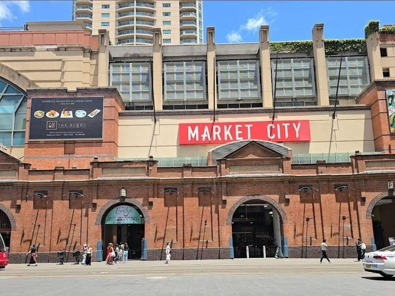
Paddy's Markets Haymarket
Paddy's Markets Haymarket is a historic and bustling marketplace in Sydney, located near Chinatown. Open five days a week, it offers a wide variety of goods including souvenirs, clothing, fresh produce, hand-crafted jewelry, vintage records, and handmade Chinese lanterns. The market also features stalls selling fresh fruit and vegetables, dairy products, bakery goods as well as imitation designer wear.
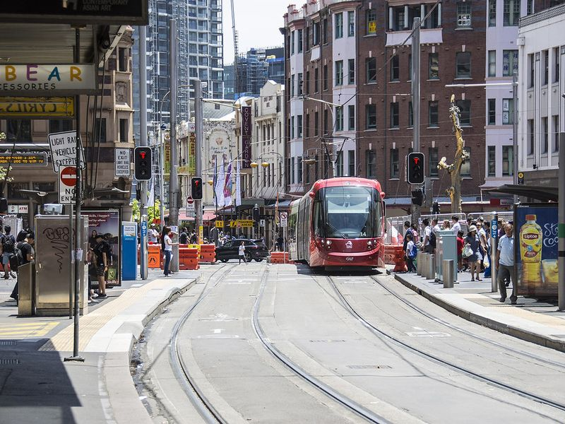
Chinatown Sydney
Chinatown Sydney is listed among principal sites for Sydney within Australia. Municipal and regional heritage listings document its place in the historic centre and travellers routes through Sydney. Chinatown Sydney is listed among principal sites for Sydney within Australia.
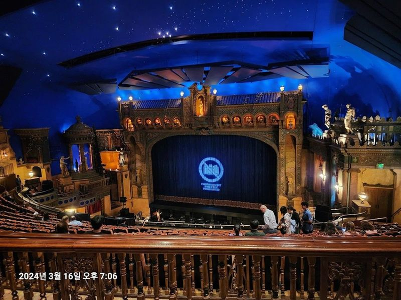
Capitol Theatre
Capitol Theatre, located in the Haymarket district of Sydney, is a historic Victorian theatre known for its ornate decor and opulent atmosphere. The venue has been hosting a variety of performances including musicals, comedy acts, ballets, and plays since it first opened in 1892. With its sparkling chandeliers, intricate plasterwork, and marble staircase, the theatre has become a top tourist attraction in Sydney.
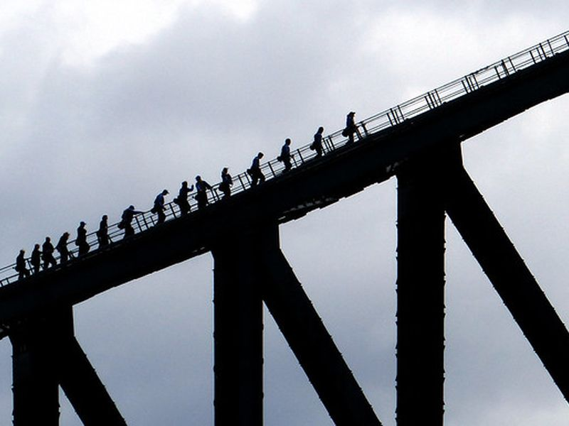
BridgeClimb Sydney
BridgeClimb Sydney is listed among principal sites for Sydney within Australia. Municipal and regional heritage listings document its place in the historic centre and travellers routes through Sydney. BridgeClimb Sydney is listed among principal sites for Sydney within Australia.
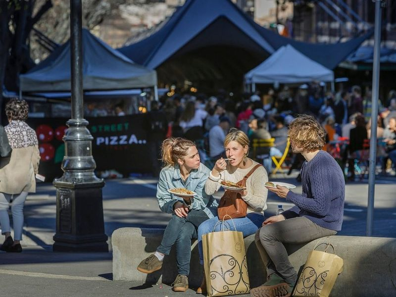
The Rocks Market
The Rocks Market is a lively open-air waterfront market held every weekend near Sydney's CBD. It transforms the historic cobblestone laneways into a display of talented chefs and artisans, offering a carefully curated collection of fashion, homewares, artworks, and gifts. Visitors can indulge in gourmet street food while enjoying live entertainment, supporting local makers and creatives.
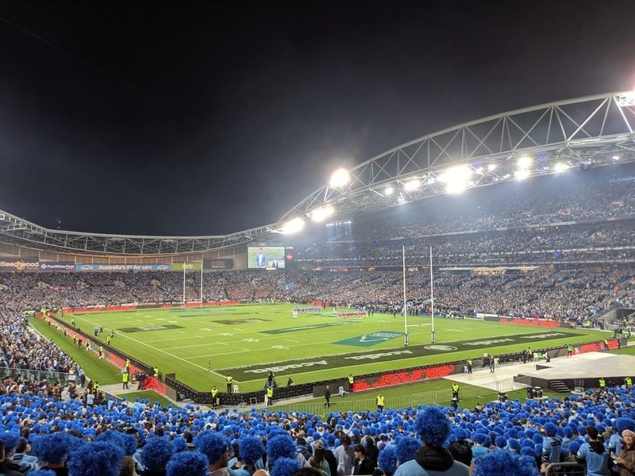
Accor Stadium
Accor Stadium, formerly known as Stadium Australia, is a versatile venue located in Sydney Olympic Park, Australia. Built for the 2000 Olympics, it has since been refurbished to accommodate various sports including Australian Rules Football, Cricket, Rugby league and Rugby Union matches. Additionally, it hosts concerts and events such as the upcoming FIFA Women's World Cup 2023. The stadium offers an electrifying atmosphere for sporting events and provides ample amenities for visitors.
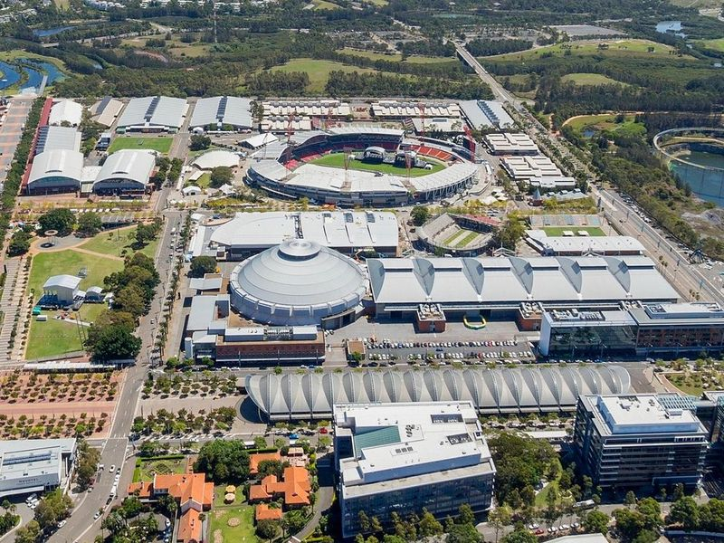
Sydney Showground
Sydney Showground, located in Sydney Olympic Park, is a premier events venue that has hosted major events in Australia. It offers versatile indoor and outdoor spaces suitable for small meetings, large-scale exhibitions, trade shows, and festivals. The Easter Show at Sydney Showground is a popular but expensive experience with various food stalls, performances, grand parades, and thrilling rides. The highlight of the show is the fireworks display.
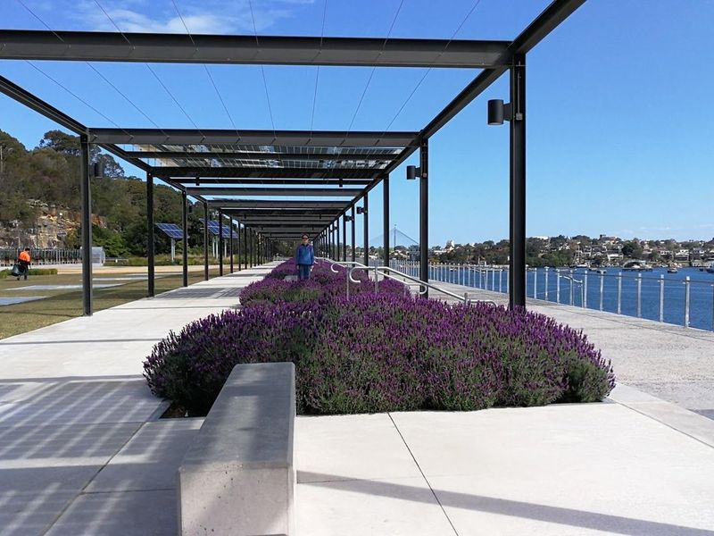
Coal Loader Centre for Sustainability
The Coal Loader Centre for Sustainability in Waverton, Sydney offers a unique experience that combines history and sustainability. Visitors can explore the 160m-long former coal-loading tunnel with sensor lights guiding the way, as well as the green roof on the platform above. The site also features an Aboriginal bush foods garden and a rock carving of a whale, showcasing its rich indigenous heritage.
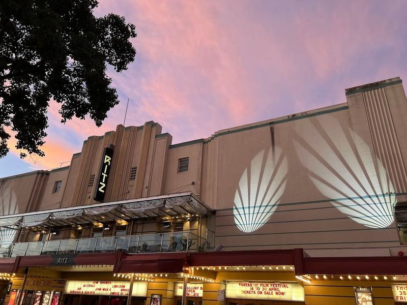
Ritz Cinemas
Ritz Cinemas, located in a 1930s art deco building, offers a unique movie-watching experience with its cocktail bar and balcony. It is a popular destination for film enthusiasts of all ages, showcasing the latest movies on big screens with top-notch surround sound. The cinema holds historical significance as one of the only two original Art Deco cinemas still standing in Sydney. Additionally, it provides an opportunity to watch films in 70mm format, making it a rare find in the city.